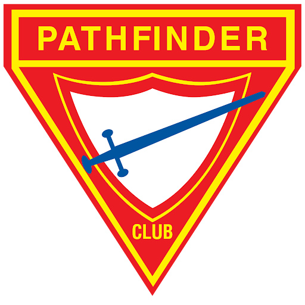
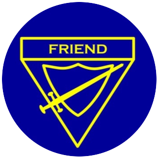
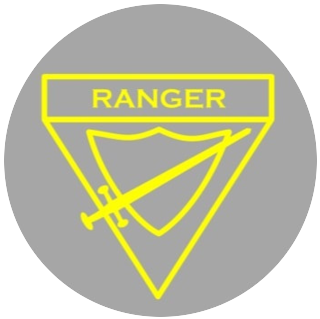
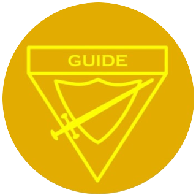

Ages 10–16 · Grades 5–10 · Flagship club ministry
A church-centered adventure for every 10 to 16 year old: camping, honors, drill and marching, drum corps and deep Bible study, led by trained volunteers in more than 60 clubs across Greater New York.

What we promise
“By the grace of God, I will be pure and kind and true. I will keep the Pathfinder Law. I will be a servant of God and a friend to man.”
Pathfinders is where children become leaders. Every meeting, campout and honor is built to grow a young person spiritually, mentally, physically and socially, with adults who model what it means to walk with Jesus.
Conference Pathfinder Director
Name and title to be provided
The Pathfinder Law
Inside the club
Every Pathfinder club takes part in the club year. These four conference programs are where clubs compete, perform and grow together.
Teams of six study one book of the Bible for months, then test their knowledge from club to division level.
Explore PBEOlder Pathfinders learn to plan, teach and lead as apprentice staff on a three-year track.
Explore TLTPercussion and pageantry: clubs rehearse all year for parades, Pathfinder Day and the conference review.
Explore Drum CorpsBasic and fancy drill units build teamwork and precision, judged at the annual conference drill meet.
Explore drillPlan the year
Dates change each year. The current calendar is always on the Events page; this is the rhythm every club follows.
See this year's Pathfinder datesGrowth track
Each class year covers Bible, personal growth, health, outdoor skills and service. Pathfinders are invested in their class each June.

FriendGrade 5 · age 10
RangerGrade 8 · age 13
GuideGrade 10 · age 15Honors
From knot-tying to first aid to Christian citizenship, honors are the patches on a Pathfinder's sash. Clubs teach them at meetings; many are offered at camporee.
Coming up
Club directors & staff
Everything a director needs in one place: forms, standards, training dates and the people to call.
Open the resource libraryPeople to call
The conference team and the area coordinators who support every club.
Name
Conference Pathfinder Director
Name
Associate Director
Name
Area Coordinator · Brooklyn
Name
Area Coordinator · Queens
Join
Pathfinder clubs meet at local Seventh-day Adventist churches. Pick your area to see the clubs and the director to contact.
Example Church Pathfinder Club
Brooklyn · meets Sundays 10 am
Example Church Pathfinder Club
Queens · meets Sabbath afternoons
Example Church Pathfinder Club
The Bronx · meets Sundays 9 am
Example rows. The real list comes from the club directory the Director provides.
Life in the club
For parents
Answers below are drafts for the Director to confirm.
No. Pathfinder clubs welcome any child aged 10 to 16 who is willing to take part in the program, including its spiritual activities.
Each club sets its own annual fee to cover insurance, class materials and events. Uniforms are purchased separately; many clubs help families with costs. Ask the local director.
Most clubs meet weekly or twice a month at their church, usually Sunday morning or Sabbath afternoon, from September to June.
Every adult staff member completes a background check and child-protection training before serving, and clubs follow Adventist Risk Management guidelines for trips and camping.
Class A uniform pieces, sashes and insignia are available through the GNYC Youth Store and AdventSource. Your director will tell you what a new Pathfinder needs first.
Ready to start?
The conference Pathfinder office will connect you with a club near you or walk your church through chartering a new one.